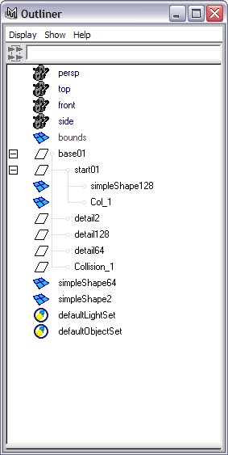

|
General Information
There is no correct way to make collision objects for the Torque engine. It
all depends on how your programmer wants to implement collision detection.
Several games used this engine and they all used different collision schemes.
Different collision schemes can be different for different shapes as well.
Some shapes use simple sphere collision that is derived from the bounding box,
some have custom-built collision shapes. Vehicles tend to have custom collision
shapes.
Custom collision shapes can be created by assigning
a negative detail number to the shape and creating a corresponding detail
marker. Shapes with negative numbers will export but not draw. Because Maya
does not allow dashes ("-")
in object names, underscores ("_") must be used.
The Torque Game Engine presently uses detail markers
named Collision_# with
the mesh shapes named Col_#. The shapes must be convex
hulls (no
concave surfaces).
Here are some of the naming conventions:
Collision_1 through Collision_9: These are collision markers.
Col_1 through Col_9: These are the actual collision meshes.
LOS_9 through LOS_15: Markers for line of sight, or "bullet", collision
shapes.
LOScol_9 through LOScol_15: Geometry for line of sight collision.
Keep the detail
meshes as low in polygon count as possible, because collision can be processor
intensive. Vehicles are limited to ONE collision mesh for the collision shape.
Create Collision Details for simpleShape
1. Open simpleShapeBase.mb.
2. Duplicate simpleShape128 with
the input graph. Rename the new shape Col_1 and
set its subdivisionsAxis and subdivisionsHeight to 6.
3. Open Outliner (Window > Outliner).
4. Expand base01.
Select detail2 and duplicate it. Rename
the new detail marker Collision_1.

5. Save the scene file as simpleShapeCollision.mb.
6. Export this shape. It will now have a collision mesh.
The
easiest way to test the collision is to replace an existing shape in the
game. For example, you can export a shape called bush1.dts and
replace the one that exists in the demo (make sure you rename the old bush1.dts and
have your texture in the same directory). Drop in the demo, and you can
crash into and bounce off of the shape you just made.
|